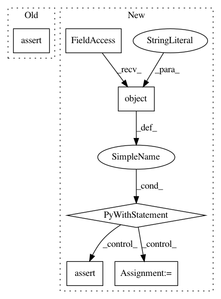

7a9a92b3e141bae9b426084cfd3f37add009c590,test/lazy/test_kronecker_product_added_diag_lazy_tensor.py,TestKroneckerProductAddedDiagLazyTensor,test_root_inv_decomposition_no_cholesky,#TestKroneckerProductAddedDiagLazyTensor#,44
Before Change
res = root_approx.matmul(test_mat)
actual = lazy_tensor.inv_matmul(test_mat)
self.assertAllClose(res, actual, rtol=0.05, atol=0.02)
self.assertEqual(is_cached(lazy_tensor, "cholesky"), False)
if __name__ == "__main__":
unittest.main()
After Change
lazy_tensor = self.create_lazy_tensor()
test_mat = torch.randn(*lazy_tensor.batch_shape, lazy_tensor.size(-1), 5)
// Check that cholesky is not called
with mock.patch.object(lazy_tensor, "cholesky") as chol_mock:
root_approx = lazy_tensor.root_inv_decomposition()
res = root_approx.matmul(test_mat)
actual = lazy_tensor.inv_matmul(test_mat)
self.assertAllClose(res, actual, rtol=0.05, atol=0.02)
chol_mock.assert_not_called()
if __name__ == "__main__":
unittest.main()
In pattern: SUPERPATTERN
Frequency: 4
Non-data size: 6
Instances
Project Name: cornellius-gp/gpytorch
Commit Name: 7a9a92b3e141bae9b426084cfd3f37add009c590
Time: 2020-07-17
Author: balandat@fb.com
File Name: test/lazy/test_kronecker_product_added_diag_lazy_tensor.py
Class Name: TestKroneckerProductAddedDiagLazyTensor
Method Name: test_root_inv_decomposition_no_cholesky
Project Name: cornellius-gp/gpytorch
Commit Name: 7a9a92b3e141bae9b426084cfd3f37add009c590
Time: 2020-07-17
Author: balandat@fb.com
File Name: test/lazy/test_kronecker_product_added_diag_lazy_tensor.py
Class Name: TestKroneckerProductAddedDiagLazyTensor
Method Name: test_if_cholesky_used
Project Name: pantsbuild/pants
Commit Name: eca2c7192ef13b239bd2e387cb5759c5acf9e558
Time: 2015-07-23
Author: kwilson@twopensource.com
File Name: tests/python/pants_test/pantsd/test_process_manager.py
Class Name: TestProcessManager
Method Name: test_is_alive
Project Name: mlflow/mlflow
Commit Name: 219e29442e44b5d16488d946574cf6030eaa4d52
Time: 2020-08-06
Author: trangevi@microsoft.com
File Name: tests/store/tracking/test_abstract_store.py
Class Name:
Method Name: test_list_run_infos